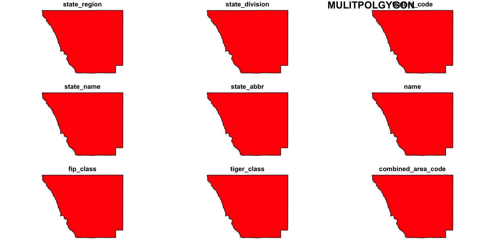
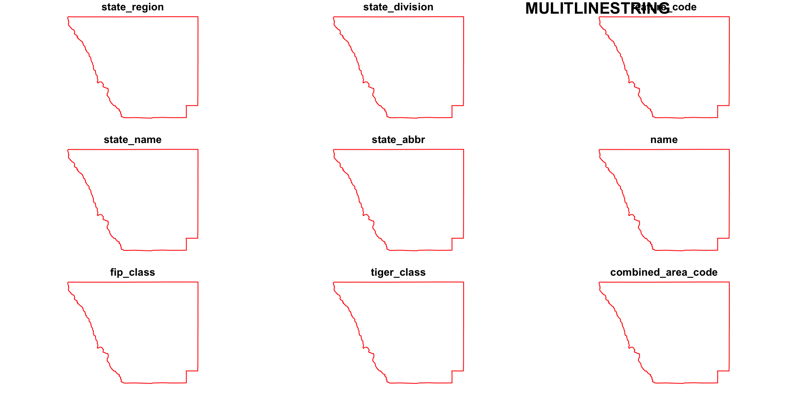
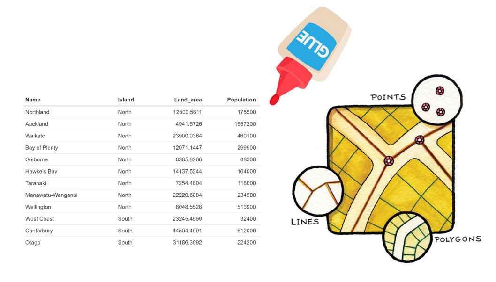
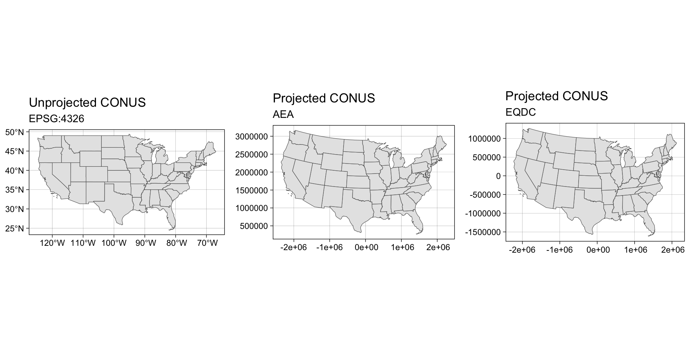

Lecture 23
Introduction to Simple Features
Simple Features

Simple Features
Simple feature geometries describe the geometries of
features.The main application of simple feature geometries is to describe 2D geometries as
points,lines, orpolygons.“simple” refers to the fact that line or polygon geometries are represented by set of points connected with straight lines.
Simple features access is a standard (Herring 2011, Herring (2010), ISO (2004)) for describing simple feature geometries via:
a class hierarchy
a set of operations
binary and text encodings
Simple Features Access
Simple features or simple feature access refers to the formal standard (ISO 19125-1:2004) describing how objects in the real world can be represented in computers, with emphasis on the spatial geometry of these objects.
It also describes how objects can be stored in and retrieved from databases, and which geometrical operations should/can be defined for them.
The standard is widely implemented in spatial databases (such as PostGIS), commercial GIS (e.g., ESRI ArcGIS) and forms the vector data basis for libraries such as GDAL.
A subset of simple features (e.g. the big 7) forms the GeoJSON specification.
R has well-supported classes for storing spatial data (sp) and interfacing to the above mentioned environments (rgdal, rgeos), but has so far lacked a complete implementation of simple features, making conversions at times convoluted, inefficient or incomplete.
Geometry types
The following 7 simple feature types are the most common, and are the only ones used for GeoJSON:
| SINGLE | Description |
|---|---|
POINT |
zero-dimensional geometry containing a single point |
LINESTRING |
sequence of points connected by straight, non-self intersecting line pieces; one-dimensional geometry |
POLYGON |
geometry with a positive area (two-dimensional); sequence of points form a closed, non-self intersecting ring; the first ring denotes the exterior ring, zero or more subsequent rings denote holes in this exterior ring |
| MULTI (same typed) | Description |
|---|---|
MULTIPOINT |
set of points; a MULTIPOINT is simple if no two Points in the MULTIPOINT are equal |
MULTILINESTRING |
set of linestrings |
MULTIPOLYGON |
set of polygons |
| Multi-Typed | Description |
|---|---|
GEOMETRYCOLLECTION |
set of geometries of any type except GEOMETRYCOLLECTION |
- The descriptions above were copied from the PostGIS manual.
The remaining geometries 10 are rarer, but increasingly find implementations:
| type | description |
|---|---|
CIRCULARSTRING |
The CIRCULARSTRING is the basic curve type, similar to a LINESTRING in the linear world. A single segment requires three points, the start and end points (first and third) and any other point on the arc. The exception to this is for a closed circle, where the start and end points are the same. In this case the second point MUST be the center of the arc, i.e., the opposite side of the circle. To chain arcs together, the last point of the previous arc becomes the first point of the next arc, just like in LINESTRING. This means that a valid circular string must have an odd number of points greater than 1. |
COMPOUNDCURVE |
A compound curve is a single, continuous curve that has both curved (circular) segments and linear segments. That means that in addition to having well-formed components, the end point of every component (except the last) must be coincident with the start point of the following component. |
CURVEPOLYGON |
Example compound curve in a curve polygon: CURVEPOLYGON(COMPOUNDCURVE(CIRCULARSTRING(0 0,2 0, 2 1, 2 3, 4 3),(4 3, 4 5, 1 4, 0 0)), CIRCULARSTRING(1.7 1, 1.4 0.4, 1.6 0.4, 1.6 0.5, 1.7 1) ) |
MULTICURVE |
A MultiCurve is a 1-dimensional GeometryCollection whose elements are Curves, it can include linear strings, circular strings or compound strings. |
MULTISURFACE |
A MultiSurface is a 2-dimensional GeometryCollection whose elements are Surfaces, all using coordinates from the same coordinate reference system. |
CURVE |
A Curve is a 1-dimensional geometric object usually stored as a sequence of Points, with the subtype of Curve specifying the form of the interpolation between Points |
SURFACE |
A Surface is a 2-dimensional geometric object |
POLYHEDRALSURFACE |
A PolyhedralSurface is a contiguous collection of polygons, which share common boundary segments |
TIN |
A TIN (triangulated irregular network) is a PolyhedralSurface consisting only of Triangle patches. |
TRIANGLE |
A Triangle is a polygon with 3 distinct, non-collinear vertices and no interior boundary |
Dimensions
All geometries are composed of points
Points are defined by coordinates in a 2-, 3- or 4-D space.
In addition to XY coordinates, there are two optional dimensions:
a Z coordinate, denoting altitude
an M coordinate (rarely used), denoting some measure
The
Mdescribes a property of the vertex that is independent of the feature.It sounds attractive to encode a time as M, however these quickly become invalid once the path self-intersects.
Both Z and M are found relatively rarely, and software support to do something useful with them is rarer still.
Valid geometries
Valid geometries obey the following properties:
LINESTRINGSshall not self-intersectPOLYGONrings shall be closed (last point = first point)POLYGONholes (inner rings) shall be inside their exterior ringPOLYGONinner rings shall maximally touch the exterior ring in single points, not over a linePOLYGONrings shall not repeat their own path
If any of the above is not the case, the geometry is not valid.
Non-simple and non-valid geometries
st_is_simpleandst_is_validprovide methods to help detect non-simple and non-valid geometries:An example of a non-simple geometries is a self-intersecting lines
An example of a non-valid geometry are would be a polygon with slivers or self-intersections.
Empty Geometries
An important concept in the feature geometry framework is the
emptygeometry.emptygeometries serve similar purposes as NA values in vectors (placeholder)Empty geometries arise naturally from geometrical operations, for instance:
It is not entirely clear what the benefit is of having
typedempty geometries, but according to the simple feature standard they are type so thesfpackage abides by that.Empty geometries can be detected by:
So:
- There are 17 typed geometries supported by the simple feature standard
- All geometries are made up of points
- points can exist in 2,3,4 Dinimsonal space
LINESTRINGandPOLYGONgeometries have rules that define validity- Geometries can be empty (but are still typed)
How simple features are organized in R?
Simple Features is a standard that is implemented in R (not limited to R)
So far we have discusses simple features the standard, rather then simple features the implementation
In R, simple features are implemented using standard data structures (S3 classes, lists, matrix, vector).
Attributes are stored in
data.frames(ortbl_df)Feature geometries are stored in a
data.framecolumn.Since geometries are not single-valued, they are put in a
list-columnThis means each observation (element) is a list itself!
sfg –> sfc –> sf
sf, sfc, sfg
The three classes are used to represent simple feature obejcts are:
sf: data.frame with feature attributes and geometries
which is contains an:
sfc: the list-column with the geometries for each feature
which is composed of:
sfg, individual simple feature geometries
sf, sfc, sfg

In the output we see:
in green a simple feature: a single record (row, consisting of attributes and geometry
in blue a single simple feature geometry (an object of class
sfg)in red a simple feature list-column (an object of class
sfc, which is a column in thedata.frame)Even though geometries are native R objects, they are printed as well-known text
sfg: simple feature geometry (blue)
Simple feature geometry (
sfg) objects carry the geometry for a single featureSimple feature geometries are implemented as R native data, using the following rules
a single POINT is a numeric vector
a set of points (e.g. in a LINESTRING or ring of a POLYGON) is a
matrix, each row containing a pointany other set is a
list
- list of numeric matrices for
MULTILINESTRINGandPOLYGON - list of lists of numeric matrices for
MULTIPOLYGON - list of (typed) geometries for
GEOMETRYCOLLECTION
Note: Mixed geometries
Sets of simple features also consist of features with heterogeneous geometry types. In this case, the geometry type of the set is GEOMETRY:
These set can be filtered by using st_is
or, when working with sf objects,
GEOMETRYCOLLECTION
Single features (1 geometry per row) can have a single geometry, that consists of several geometries of different types.
Such cases arise rather naturally when looking for intersections. For instance, the intersection of two LINESTRING geometries may be the combination of a
LINESTRINGand aPOINT.Putting this intersection into a single feature geometry needs a
GEOMETRYCOLLECTION
pt <- st_point(c(1, 0))
ls <- st_linestring(matrix(c(4, 3, 0, 0), ncol = 2))
poly1 <- st_polygon(list(matrix(c(5.5, 7, 7, 6, 5.5, 0, 0, -0.5, -0.5, 0), ncol = 2)))
poly2 <- st_polygon(list(matrix(c(6.6, 8, 8, 7, 6.6, 1, 1, 1.5, 1.5, 1), ncol = 2)))
multipoly <- st_multipolygon(list(poly1, poly2))
st_sfc(pt, ls, poly1, poly2, multipoly)
#> Geometry set for 5 features
#> Geometry type: GEOMETRY
#> Dimension: XY
#> Bounding box: xmin: 1 ymin: -0.5 xmax: 8 ymax: 1.5
#> CRS: NA
(j <- st_geometrycollection(list(pt, ls, poly1, poly2, multipoly)))GEOMETRYCOLLECTION
- In case we end up with
GEOMETRYCOLLECTIONobjects, the next question is often what to do with them. One thing we can do is extract elements from them:
Conversion between types
We can convert simple feature geometries using the st_cast generic (up to the extent that a conversion is feasible):
methods(st_cast)
#> [1] st_cast.CIRCULARSTRING* st_cast.COMPOUNDCURVE*
#> [3] st_cast.CURVE* st_cast.GEOMETRYCOLLECTION*
#> [5] st_cast.LINESTRING* st_cast.MULTICURVE*
#> [7] st_cast.MULTILINESTRING* st_cast.MULTIPOINT*
#> [9] st_cast.MULTIPOLYGON* st_cast.MULTISURFACE*
#> [11] st_cast.POINT* st_cast.POLYGON*
#> [13] st_cast.sf* st_cast.sfc*
#> [15] st_cast.sfc_CIRCULARSTRING*
#> see '?methods' for accessing help and source codeConversion between types
Lets take the Larimer County in our Colorado sf object:
(co1 = AOI::aoi_get(state = "CO", county = "Larimer"))
#> Simple feature collection with 1 feature and 14 fields
#> Geometry type: MULTIPOLYGON
#> Dimension: XY
#> Bounding box: xmin: -106.1954 ymin: 40.25778 xmax: -104.9431 ymax: 40.99844
#> Geodetic CRS: WGS 84
#> state_region state_division feature_code state_name state_abbr name
#> 1 4 8 0198150 Colorado CO Larimer
#> fip_class tiger_class combined_area_code metropolitan_area_code
#> 1 H1 G4020 NA <NA>
#> functional_status land_area water_area fip_code
#> 1 A 6723017943 98980718 08069
#> geometry
#> 1 MULTIPOLYGON (((-105.6533 4...
(co_ls = st_cast(co1, "MULTILINESTRING"))
#> Simple feature collection with 1 feature and 14 fields
#> Geometry type: MULTILINESTRING
#> Dimension: XY
#> Bounding box: xmin: -106.1954 ymin: 40.25778 xmax: -104.9431 ymax: 40.99844
#> Geodetic CRS: WGS 84
#> state_region state_division feature_code state_name state_abbr name
#> 1 4 8 0198150 Colorado CO Larimer
#> fip_class tiger_class combined_area_code metropolitan_area_code
#> 1 H1 G4020 NA <NA>
#> functional_status land_area water_area fip_code
#> 1 A 6723017943 98980718 08069
#> geometry
#> 1 MULTILINESTRING ((-105.6533...

Conversion between types
It is often convenient to analyze the the points that make up a LINESTRING However …
does not do what we expect, because it will convert a single geometry into a new single geometry (one line to one point)
Instead, we must recognize that a collection of points is what defines a LINSETRING and a collection of POINTs, operating as a single unit, is a MULTIPOINT
If we really wanted the individual POINT geometries, we need to work with sets:
sfc: sets of geometries
sfprovides a dedicated class for handeling geometry sets, calledsfc(simple feature geometry list column).We can create such a list column with constructor function
st_sfc:
The default report from the print method for sfc gives
- the number of features geometries
- the feature geometry type (here: POINT)
- the feature geometry dimension (here: XY)
- the bounding box for the set
- the coordinate reference system for the set (epsg and proj4string)
- the first few geometries, as (abbreviated) WKT
In addition to a class, the sfc object has further attributes (remember S3 class!)
which are used to record for the whole set:
- a precision value
- the bounding box enclosing all geometries (for x and y)
- a coordinate reference system
- the number of empty geometries contained in the set
sf: objects with simple features
Simple features geometries and feature attributes are put together in sf (simple feature) objects.
co1
#> Simple feature collection with 1 feature and 14 fields
#> Geometry type: MULTIPOLYGON
#> Dimension: XY
#> Bounding box: xmin: -106.1954 ymin: 40.25778 xmax: -104.9431 ymax: 40.99844
#> Geodetic CRS: WGS 84
#> state_region state_division feature_code state_name state_abbr name
#> 1 4 8 0198150 Colorado CO Larimer
#> fip_class tiger_class combined_area_code metropolitan_area_code
#> 1 H1 G4020 NA <NA>
#> functional_status land_area water_area fip_code
#> 1 A 6723017943 98980718 08069
#> geometry
#> 1 MULTIPOLYGON (((-105.6533 4...This sf object is of class
meaning it extends data.frame, but with a single list-column with geometries, which is held in the column named:
The stickness of sfc column
- Geometry columns are “sticky” meaning they persist through data manipulation:
co |>
select(name) |>
slice(1:2)
#> Simple feature collection with 2 features and 1 field
#> Geometry type: MULTIPOLYGON
#> Dimension: XY
#> Bounding box: xmin: -106.0393 ymin: 37.3562 xmax: -103.7057 ymax: 40.00137
#> Geodetic CRS: WGS 84
#> name geometry
#> 1 Adams MULTIPOLYGON (((-105.0532 3...
#> 2 Alamosa MULTIPOLYGON (((-105.4855 3...- Dropping the geometry column requires dropping the geometry via
sf:
- Or cohersing the
sfobject to adata.frame:
The stickness of sfc column
- A simple features object (sf) is the connection of a
sfclist-column anddata.frameof attributes

Reading and writing
As we’ve seen above, reading spatial data from an external file can be done via sf - reading data requires the “parser function” and the file path
#> Reading layer `co' from data source
#> `/Users/mikejohnson/github/csu-ess-330/slides/data/co.shp'
#> using driver `ESRI Shapefile'
#> Simple feature collection with 64 features and 4 fields
#> Geometry type: MULTIPOLYGON
#> Dimension: XY
#> Bounding box: xmin: -109.0602 ymin: 36.99246 xmax: -102.0415 ymax: 41.00342
#> Geodetic CRS: WGS 84we can suppress the output by adding argument quiet=TRUE or by using the otherwise nearly identical but more quiet
Writing takes place in the same fashion, using st_write:
or its quiet alternative that silently overwrites existing files by default,
From Tables (e.g. CSV)
Spatial data can also be created from CSV and other flat files once it is in R:
(cities = readr::read_csv("../labs/data/uscities.csv") |>
select(city, state_name, county_name, population, lat, lng) )
#> # A tibble: 31,254 × 6
#> city state_name county_name population lat lng
#> <chr> <chr> <chr> <dbl> <dbl> <dbl>
#> 1 New York New York Queens 18832416 40.7 -73.9
#> 2 Los Angeles California Los Angeles 11885717 34.1 -118.
#> 3 Chicago Illinois Cook 8489066 41.8 -87.7
#> 4 Miami Florida Miami-Dade 6113982 25.8 -80.2
#> 5 Houston Texas Harris 6046392 29.8 -95.4
#> 6 Dallas Texas Dallas 5843632 32.8 -96.8
#> 7 Philadelphia Pennsylvania Philadelphia 5696588 40.0 -75.1
#> 8 Atlanta Georgia Fulton 5211164 33.8 -84.4
#> 9 Washington District of Columbia District of Columb… 5146120 38.9 -77.0
#> 10 Boston Massachusetts Suffolk 4355184 42.3 -71.1
#> # ℹ 31,244 more rowsTo do this, you must specify the X and the Y coordinate columns as well as a CRS:
- A typical lat/long CRS is EPSG:4326
(cities_sf = st_as_sf(cities, coords = c("lng", "lat"), crs = 4326))
#> Simple feature collection with 31254 features and 4 fields
#> Geometry type: POINT
#> Dimension: XY
#> Bounding box: xmin: -176.6295 ymin: 17.9559 xmax: 174.111 ymax: 71.2727
#> Geodetic CRS: WGS 84
#> # A tibble: 31,254 × 5
#> city state_name county_name population geometry
#> * <chr> <chr> <chr> <dbl> <POINT [°]>
#> 1 New York New York Queens 18832416 (-73.9249 40.6943)
#> 2 Los Angeles California Los Angeles 11885717 (-118.4068 34.1141)
#> 3 Chicago Illinois Cook 8489066 (-87.6866 41.8375)
#> 4 Miami Florida Miami-Dade 6113982 (-80.2101 25.784)
#> 5 Houston Texas Harris 6046392 (-95.3885 29.786)
#> 6 Dallas Texas Dallas 5843632 (-96.7667 32.7935)
#> 7 Philadelphia Pennsylvania Philadelph… 5696588 (-75.1339 40.0077)
#> 8 Atlanta Georgia Fulton 5211164 (-84.422 33.7628)
#> 9 Washington District of Co… District o… 5146120 (-77.0163 38.9047)
#> 10 Boston Massachusetts Suffolk 4355184 (-71.0852 42.3188)
#> # ℹ 31,244 more rowsData Manipulation
Since
sfobjects aredata.frames, ourdplyrverbs work!Lets find the most populous city in each Colorado county…
sf and dplyr
#> Simple feature collection with 31254 features and 4 fields
#> Geometry type: POINT
#> Dimension: XY
#> Bounding box: xmin: -176.6295 ymin: 17.9559 xmax: 174.111 ymax: 71.2727
#> Geodetic CRS: WGS 84
#> # A tibble: 31,254 × 5
#> city state_name county_name population geometry
#> * <chr> <chr> <chr> <dbl> <POINT [°]>
#> 1 New York New York Queens 18832416 (-73.9249 40.6943)
#> 2 Los Angeles California Los Angeles 11885717 (-118.4068 34.1141)
#> 3 Chicago Illinois Cook 8489066 (-87.6866 41.8375)
#> 4 Miami Florida Miami-Dade 6113982 (-80.2101 25.784)
#> 5 Houston Texas Harris 6046392 (-95.3885 29.786)
#> 6 Dallas Texas Dallas 5843632 (-96.7667 32.7935)
#> 7 Philadelphia Pennsylvania Philadelph… 5696588 (-75.1339 40.0077)
#> 8 Atlanta Georgia Fulton 5211164 (-84.422 33.7628)
#> 9 Washington District of Co… District o… 5146120 (-77.0163 38.9047)
#> 10 Boston Massachusetts Suffolk 4355184 (-71.0852 42.3188)
#> # ℹ 31,244 more rowssf and dplyr
#> Simple feature collection with 477 features and 4 fields
#> Geometry type: POINT
#> Dimension: XY
#> Bounding box: xmin: -109.0066 ymin: 37.0155 xmax: -102.0804 ymax: 40.9849
#> Geodetic CRS: WGS 84
#> # A tibble: 477 × 5
#> city state_name county_name population geometry
#> * <chr> <chr> <chr> <dbl> <POINT [°]>
#> 1 Denver Colorado Denver 2691349 (-104.8758 39.762)
#> 2 Colorado Springs Colorado El Paso 638421 (-104.7605 38.8674)
#> 3 Aurora Colorado Arapahoe 390201 (-104.7237 39.7083)
#> 4 Fort Collins Colorado Larimer 339256 (-105.0656 40.5477)
#> 5 Lakewood Colorado Jefferson 156309 (-105.1172 39.6977)
#> 6 Greeley Colorado Weld 143554 (-104.7706 40.4152)
#> 7 Thornton Colorado Adams 142878 (-104.9438 39.9197)
#> 8 Grand Junction Colorado Mesa 141008 (-108.5673 39.0877)
#> 9 Arvada Colorado Jefferson 122835 (-105.151 39.832)
#> 10 Boulder Colorado Boulder 120121 (-105.2524 40.0248)
#> # ℹ 467 more rowssf and dplyr
#> Simple feature collection with 477 features and 4 fields
#> Geometry type: POINT
#> Dimension: XY
#> Bounding box: xmin: -109.0066 ymin: 37.0155 xmax: -102.0804 ymax: 40.9849
#> Geodetic CRS: WGS 84
#> # A tibble: 477 × 5
#> # Groups: county_name [64]
#> city state_name county_name population geometry
#> <chr> <chr> <chr> <dbl> <POINT [°]>
#> 1 Denver Colorado Denver 2691349 (-104.8758 39.762)
#> 2 Colorado Springs Colorado El Paso 638421 (-104.7605 38.8674)
#> 3 Aurora Colorado Arapahoe 390201 (-104.7237 39.7083)
#> 4 Fort Collins Colorado Larimer 339256 (-105.0656 40.5477)
#> 5 Lakewood Colorado Jefferson 156309 (-105.1172 39.6977)
#> 6 Greeley Colorado Weld 143554 (-104.7706 40.4152)
#> 7 Thornton Colorado Adams 142878 (-104.9438 39.9197)
#> 8 Grand Junction Colorado Mesa 141008 (-108.5673 39.0877)
#> 9 Arvada Colorado Jefferson 122835 (-105.151 39.832)
#> 10 Boulder Colorado Boulder 120121 (-105.2524 40.0248)
#> # ℹ 467 more rowssf and dplyr
#> Simple feature collection with 64 features and 4 fields
#> Geometry type: POINT
#> Dimension: XY
#> Bounding box: xmin: -108.9071 ymin: 37.1751 xmax: -102.2627 ymax: 40.9849
#> Geodetic CRS: WGS 84
#> # A tibble: 64 × 5
#> # Groups: county_name [64]
#> city state_name county_name population geometry
#> <chr> <chr> <chr> <dbl> <POINT [°]>
#> 1 Thornton Colorado Adams 142878 (-104.9438 39.9197)
#> 2 Alamosa Colorado Alamosa 9847 (-105.877 37.4752)
#> 3 Aurora Colorado Arapahoe 390201 (-104.7237 39.7083)
#> 4 Pagosa Springs Colorado Archuleta 1718 (-107.0307 37.2675)
#> 5 Springfield Colorado Baca 1482 (-102.6189 37.405)
#> 6 Las Animas Colorado Bent 2480 (-103.2236 38.0695)
#> 7 Boulder Colorado Boulder 120121 (-105.2524 40.0248)
#> 8 Broomfield Colorado Broomfield 75110 (-105.0526 39.9542)
#> 9 Salida Colorado Chaffee 5786 (-105.9979 38.5298)
#> 10 Cheyenne Wells Colorado Cheyenne 949 (-102.3521 38.8192)
#> # ℹ 54 more rowssf and dplyr
Plotting
We’ve already seen that
ggplot()is a powerful visualization tool:- The 5 steps we described for building a ggplot are:
- canvas
- layers (geoms)
- labels
- facets
- themes
- spatial work in R is becoming so common that
ggplot()comes with a sf geom (geom_sf)
sf an ggplot

sf an ggplot
sf an ggplot
sf an ggplot

sf an ggplot

CONUS
::: {.column width=“50%”}
:::
Coordinate Systems
What makes spatial data spatial?
- What makes a feature geometry spatial is the reference system…
Coordinate Systems
Coordinate Reference Systems (CRS) defines how spatial features relate to the surface of the Earth.
CRSs are either geographic or projected…
CRSs are measurement units for coordinates:
sf tools
In sf we have three tools for exploring, define, and changing CRS systems:
st_crs : Retrieve coordinate reference system from sf or sfc object
st_set_crs : Set or replace coordinate reference system from object
st_transform : Transform or convert coordinates of simple feature
Again, “st” (like PostGIS) denotes it is an operation that can work on a ” s patial t ype”
Geographic Coordinate Systms (GCS)
A GCS identifies locations on the curved surface of the earth.
Locations are measured in angular units from the center of the earth relative to the plane defined by the equator and the plane defined by the prime meridian.
The vertical angle describes the latitude and the horizontal angle the longitude
In most coordinate systems, the North-South and East-West directions are encoded as +/-.
North and East are positive (
+) and South and West are negative (-) sign.A GCS is defined by 3 mathematical models of the earth’s shape:
- an ellipsoid:
- defined by two radii: semi-major and semi-minor axes
- a model of the earth’s surface that is smooth
- a geoid:
- defined by the gravitational potential of the earth
- a model of the earth’s surface that is undulating
- a datum:
- defined by the alignment of the ellipsoid to the geoid
- a model of the earth’s surface that is aligned to the geoid
- an ellipsoid:
Projected Coordinate Systems
The surface of the earth is curved but maps (and to data GIS) is flat.
A projected coordinate system (PCS) is a reference system for identifying locations and measuring features on a flat (2D) surfaces. I
Projected coordinate systems have an origin, an x axis, a y axis, and a linear unit of measure.
Going from a GCS to a PCS requires mathematical transformations.
There are three main groups of projection types:
- conic:
- defined by a cone touching the earth at 1 or 2 lines of tangency
- best suited for mid-latitude areas
- cylindrical:
- defined by a cylinder touching the earth at 1 or 2 lines of tangency
- best suited for large areas
- planar:
- defined by a plane touching the earth at 1 point or along 1 line of tangency
- best suited for polar regions
- conic:
Spatial Properties
All projections distort real-world geographic features.
Think about trying to unpeel an orange while preserving the skin
The four spatial properties that are subject to distortion are: shape, area, distance and direction
A map that preserves shape is called
conformal;one that preserves area is called
equal-area;one that preserves distance is called
equidistantone that preserves direction is called
azimuthalEach map projection can preserve only one or two of the four spatial properties.
Often, projections are named after the spatial properties they preserve.
When working with small-scale (large area) maps and when multiple spatial properties are needed, it is best to break the analyses across projections to minimize errors associated with spatial distortion.
Setting CRSs/PCSs
- We saw that
sfcobjects have two attributes to store a CRS:epsgandproj4string
This implies that all geometries in a geometry list-column (sfc) must have the same CRS.
proj4stringis a generic, string-based description of a CRS, understood by PROJIt defines projection types and parameter values for particular projections,
As a result it can cover an infinite amount of different projections.
epsgis the integer ID for a known CRS that can be resolved into aproj4string.- This is somewhat equivalent to the idea that a 6-digit FIP code can be resolved to a state/county pair
Some
proj4stringvalues can resolved back into their correspondingepsgID, but this does not always work.The importance of having
epsgvalues stored with data besidesproj4stringvalues is that theepsgrefers to particular, well-known CRS, whose parameters may change (improve) over timefixing only the
proj4stringmay remove the possibility to benefit from such improvements, and limit some of the provenance of datasets (but may help reproducibility)
Transform and retrive
